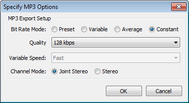

MP3 Export Options
From Audacity Manual
As with all lossy, compressed formats, there is a trade-off between the size of the file and the quality of the encoded file, higher quality requiring larger files.
- Accessed by: then the Export Audio dialog's button
- 
| Before you can export to MP3 you need to install the optional LAME MP3 encoder. |
MP3 Export Setup
- Bit Rate Mode: These offer four different ways to control the trade-off between the size and quality of the exported files.
- Preset: This gives you a choice of four presets recommended by the LAME developers. Each preset is a combination of various encoding parameters as shown in the table below. These are the recommended, easy to use settings; choose one unless you have reason to experiment with other parameters. As a rough guide to the claims made for these presets, uncritical listeners with quality equipment may perceive a file encoded with Extreme preset to be indistinguishable from the original, and those with budget equipment should perceive little difference from the original file with Standard preset.
The Insane preset is constant bit rate, as opposed to the variable bit rate used by the other presets. Files encoded with Insane preset take a fixed 2.2 MB per minute, often double the size of Extreme preset, with very little audible improvement.
- Preset: This gives you a choice of four presets recommended by the LAME developers. Each preset is a combination of various encoding parameters as shown in the table below. These are the recommended, easy to use settings; choose one unless you have reason to experiment with other parameters. As a rough guide to the claims made for these presets, uncritical listeners with quality equipment may perceive a file encoded with Extreme preset to be indistinguishable from the original, and those with budget equipment should perceive little difference from the original file with Standard preset.
- Variable: This mode continuously varies the bit rate used according to the complexity of the sound, in an attempt to maintain the quality of the recording at a consistent level. The settings range from 0 (highest quality) to 9 (smallest file size). Each setting defines a range of bit rates within which it will generally operate, assuming a stereo track. For a mono track, the achieved bit rate for each setting will usually be below the range indicated above.
Level 0 is comparable to the Extreme preset mentioned above, level 2 is comparable to Standard and level 4 to Medium presets. Variable bit rate offers the best quality compared to the Average and Constant bit rate options in most circumstances (extremely quiet music is one exception). It will tend to give you somewhat smaller file sizes for a given degree of quality, but the actual file sizes can't be accurately predicted in advance.
- Average: This sets a known, average bit rate for the file, but within this average permits some fluctuations in bit rate to reflect the relative difficulty of encoding the file. This does not provide as consistently high a quality as variable bit rate, but is generally preferable to constant bit rate if you need to know more or less how large your files will be; it offers bit rates from 8 kbps to 320 kbps.
- Variable: This mode continuously varies the bit rate used according to the complexity of the sound, in an attempt to maintain the quality of the recording at a consistent level. The settings range from 0 (highest quality) to 9 (smallest file size). Each setting defines a range of bit rates within which it will generally operate, assuming a stereo track. For a mono track, the achieved bit rate for each setting will usually be below the range indicated above.
- Constant: This sets a constant bit rate for the encoding, regardless of its complexity. Of the four bit rate modes, this usually gives the worst, least consistent quality for a given file size, but that size itself is completely predictable (note that if you choose a high bit rate, the LAME encoder may use a lower constant bit rate if you choose 11025 Hz or lower project rate). Use constant bit rate if you are streaming the file over the internet, as it ensures the audio cannot stutter due to sudden peaks in the bit rate. The available bit rates are the same as for average bit rate - the default rate (128 kbps) gives you a known file size of about 1 MB per minute of mono or stereo audio.
- Quality: This list lets you select the bit rate in kbps (kilobits per second) for encoding your file. A higher bit rate always gives better quality but at the expense of a larger file size and vice versa. The bit rates are absolute for average and constant bit rate modes, but expressed as a range for the variable and preset modes (except for the Insane preset).
- Variable Speed: Choice of speed is available when using variable bit rate encoding. It determines the speed and bit allocation routines of the encoding algorithm. The default "Fast" option is equivalent to --vbr-new and is generally recommended for both speed and quality. The "Standard" slower option is equivalent to --vbr-old. It is possible that this may give more consistent encoding quality in some material or if you need to use an earlier 3.9x version of LAME.
- Channel Mode: This controls how the two channels of a stereo recording are processed during encoding:
- Joint Stereo (default) means the encoder can switch from frame to frame between "Stereo" (which just encodes the left and right channels independently) and Mid/Side stereo. Mid/Side stereo converts the Left and Right channels into two different signals: a "Mid" or "Sum" channel (Left plus Right, mono) and a "Side" or "Difference" channel (the difference between the two channels, Left minus Right). This allows recordings with relatively little stereo separation to be encoded more efficiently - more bits can be allocated to the Sum channel because there is relatively little difference information to encode.
As a result, files encoded as Joint Stereo with variable or average bit rate will be slightly smaller than comparable files encoded as Stereo, but the file size difference will be less noticeable at higher bit rates. For all bit rate modes (variable, average or constant) there will also be less audible difference between Joint Stereo and Stereo at higher bit rates.
- Stereo (sometimes called "Discrete Stereo" to distinguish it from Joint Stereo) encodes the left and right signals independently.
- Joint Stereo (default) means the encoder can switch from frame to frame between "Stereo" (which just encodes the left and right channels independently) and Mid/Side stereo. Mid/Side stereo converts the Left and Right channels into two different signals: a "Mid" or "Sum" channel (Left plus Right, mono) and a "Side" or "Difference" channel (the difference between the two channels, Left minus Right). This allows recordings with relatively little stereo separation to be encoded more efficiently - more bits can be allocated to the Sum channel because there is relatively little difference information to encode.